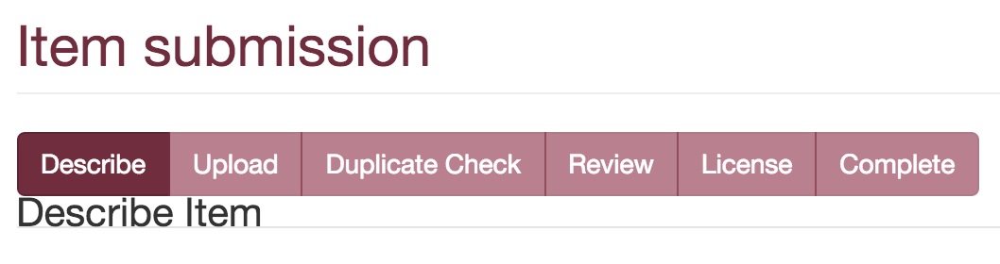
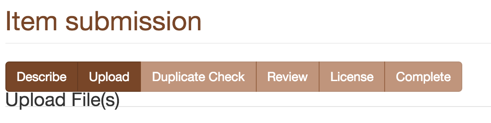

February, 2016
2016-02-05
- Looking at some DAGRIS data for Abenet Yabowork
- Lots of issues with spaces, newlines, etc causing the import to fail
- I noticed we have a very interesting list of countries on CGSpace:

- Not only are there 49,000 countries, we have some blanks (25)…
- Also, lots of things like “COTE D`LVOIRE” and “COTE D IVOIRE”
2016-02-06
- Found a way to get items with null/empty metadata values from SQL
- First, find the
metadata_field_idfor the field you want from themetadatafieldregistrytable:
dspacetest=# select * from metadatafieldregistry;
- In this case our country field is 78
- Now find all resources with type 2 (item) that have null/empty values for that field:
dspacetest=# select resource_id from metadatavalue where resource_type_id=2 and metadata_field_id=78 and (text_value='' OR text_value IS NULL);
- Then you can find the handle that owns it from its
resource_id:
dspacetest=# select handle from item, handle where handle.resource_id = item.item_id AND item.item_id = '22678';
- It’s 25 items so editing in the web UI is annoying, let’s try SQL!
dspacetest=# delete from metadatavalue where metadata_field_id=78 and text_value='';
DELETE 25
- After that perhaps a regular
dspace index-discovery(no -b) should suffice… - Hmm, I indexed, cleared the Cocoon cache, and restarted Tomcat but the 25 “|||” countries are still there
- Maybe I need to do a full re-index…
- Yep! The full re-index seems to work.
- Process the empty countries on CGSpace
2016-02-07
- Working on cleaning up Abenet’s DAGRIS data with OpenRefine
- I discovered two really nice functions in OpenRefine:
value.trim()andvalue.escape("javascript")which shows whitespace characters like\r\n! - For some reason when you import an Excel file into OpenRefine it exports dates like 1949 to 1949.0 in the CSV
- I re-import the resulting CSV and run a GREL on the date issued column:
value.replace("\.0", "") - I need to start running DSpace in Mac OS X instead of a Linux VM
- Install PostgreSQL from homebrew, then configure and import CGSpace database dump:
$ postgres -D /opt/brew/var/postgres
$ createuser --superuser postgres
$ createuser --pwprompt dspacetest
$ createdb -O dspacetest --encoding=UNICODE dspacetest
$ psql postgres
postgres=# alter user dspacetest createuser;
postgres=# \q
$ pg_restore -O -U dspacetest -d dspacetest ~/Downloads/cgspace_2016-02-07.backup
$ psql postgres
postgres=# alter user dspacetest nocreateuser;
postgres=# \q
$ vacuumdb dspacetest
$ psql -U dspacetest -f ~/src/git/DSpace/dspace/etc/postgres/update-sequences.sql dspacetest -h localhost
- After building and running a
fresh_installI symlinked the webapps into Tomcat’s webapps folder:
$ mv /opt/brew/Cellar/tomcat/8.0.30/libexec/webapps/ROOT /opt/brew/Cellar/tomcat/8.0.30/libexec/webapps/ROOT.orig
$ ln -sfv ~/dspace/webapps/xmlui /opt/brew/Cellar/tomcat/8.0.30/libexec/webapps/ROOT
$ ln -sfv ~/dspace/webapps/rest /opt/brew/Cellar/tomcat/8.0.30/libexec/webapps/rest
$ ln -sfv ~/dspace/webapps/jspui /opt/brew/Cellar/tomcat/8.0.30/libexec/webapps/jspui
$ ln -sfv ~/dspace/webapps/oai /opt/brew/Cellar/tomcat/8.0.30/libexec/webapps/oai
$ ln -sfv ~/dspace/webapps/solr /opt/brew/Cellar/tomcat/8.0.30/libexec/webapps/solr
$ /opt/brew/Cellar/tomcat/8.0.30/bin/catalina start
- Add CATALINA_OPTS in
/opt/brew/Cellar/tomcat/8.0.30/libexec/bin/setenv.sh, as this script is sourced by thecatalinastartup script - For example:
CATALINA_OPTS="-Djava.awt.headless=true -Xms2048m -Xmx2048m -XX:MaxPermSize=256m -XX:+UseConcMarkSweepGC -Dfile.encoding=UTF-8"
- After verifying that the site is working, start a full index:
$ ~/dspace/bin/dspace index-discovery -b
2016-02-08
- Finish cleaning up and importing ~400 DAGRIS items into CGSpace
- Whip up some quick CSS to make the button in the submission workflow use the XMLUI theme’s brand colors (#154)
 
2016-02-09
- Re-sync DSpace Test with CGSpace
- Help Sisay with OpenRefine
- Enable HTTPS on DSpace Test using Let’s Encrypt:
$ cd ~/src/git
$ git clone https://github.com/letsencrypt/letsencrypt
$ cd letsencrypt
$ sudo service nginx stop
# add port 443 to firewall rules
$ ./letsencrypt-auto certonly --standalone -d dspacetest.cgiar.org
$ sudo service nginx start
$ ansible-playbook dspace.yml -l linode02 -t nginx,firewall -u aorth --ask-become-pass
- We should install it in /opt/letsencrypt and then script the renewal script, but first we have to wire up some variables and template stuff based on the script here: https://letsencrypt.org/howitworks/
- I had to export some CIAT items that were being cleaned up on the test server and I noticed their
dc.contributor.authorfields have DSpace 5 authority index UUIDs… - To clean those up in OpenRefine I used this GREL expression:
value.replace(/::\w{8}-\w{4}-\w{4}-\w{4}-\w{12}::600/,"") - Getting more and more hangs on DSpace Test, seemingly random but also during CSV import
- Logs don’t always show anything right when it fails, but eventually one of these appears:
org.dspace.discovery.SearchServiceException: Error while processing facet fields: java.lang.OutOfMemoryError: Java heap space
- or
Caused by: java.util.NoSuchElementException: Timeout waiting for idle object
- Right now DSpace Test’s Tomcat heap is set to 1536m and we have quite a bit of free RAM:
# free -m
total used free shared buffers cached
Mem: 3950 3902 48 9 37 1311
-/+ buffers/cache: 2552 1397
Swap: 255 57 198
- So I’ll bump up the Tomcat heap to 2048 (CGSpace production server is using 3GB)